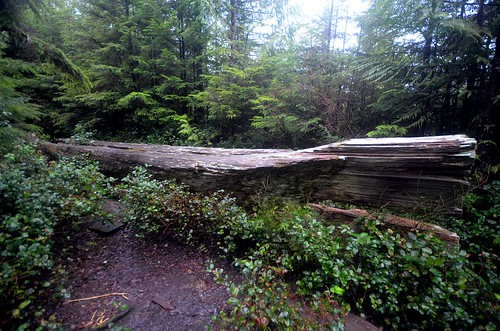
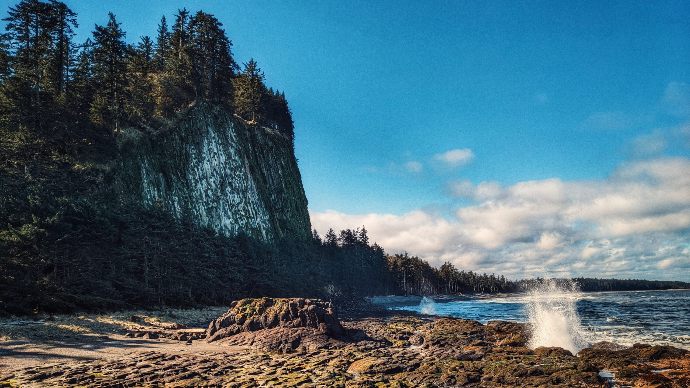
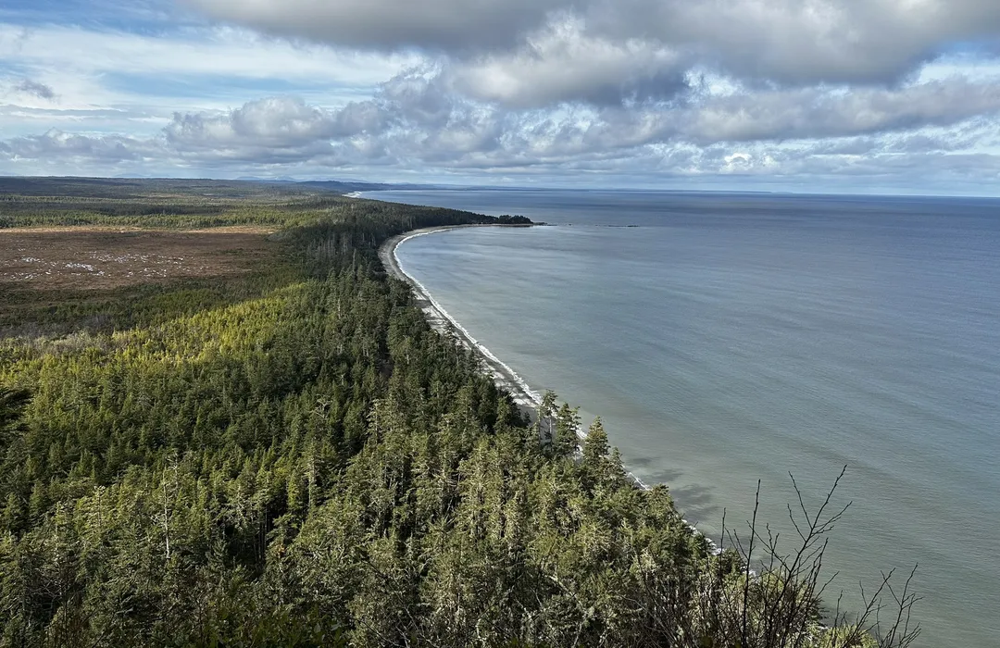
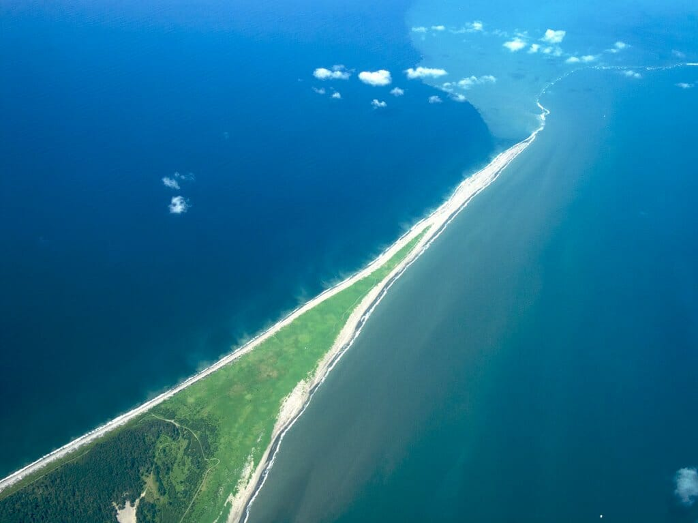

Port Clements
Mid island between Tlell and Masset
- Short easy hike through the forest to the canoe.
Photo of the old canoe
 Photos sourceMasset
North end of the island
- All connected going from a beatiful beach to find agates to the blow hole right below the hike up tow hill. Then Rose Spit right behind it all at low tide revealing a super cool beach and more agates.Be very catious around blow hole as its very slippery in spots if you go get close and water is spouting everywhere.
Looking from the blow hole to Tow Hill and Agate beach in the back
 Photos sourceAtop Tow Hill looking over agate beach
 Photos sourceRose Spit from above
 Photos source